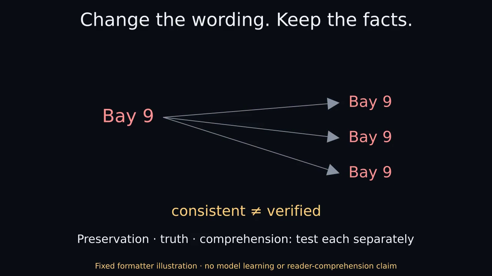

Change the wording. Keep the facts.
43.5-second narrated Manim illustration. Synthetic stock voice. FIXED TEMPLATE ILLUSTRATION · NO MODEL OR READER EXPERIMENT.
Static by default. Choose playback only if you want motion and sound. Captions use approximate sentence timing.

Download narrated MP4 · Complete text and visual explanation · Captions · Original silent version
Text and visual explanation
Change the wording. Keep the facts.
Narrated Manim concept video. 43.500 seconds.
Synthetic stock voice: Kokoro am_michael.
Sentence captions are approximate, not word-aligned.
FIXED TEMPLATE ILLUSTRATION · NO MODEL OR READER EXPERIMENT
0.000–11.567 seconds
Spoken: Suppose an instruction says: Bay three, six forty-five p.m., and bring printed ID. We can change its presentation while keeping those facts fixed.
Visual explanation: The example ledger has place Bay 3, time 18:45 and requirement printed ID. Register means an explicitly requested presentation format, not an inference about a reader's ability or background. Introductory: Go to Bay 3 at 18:45. Bring printed ID. Working: Check-in: Bay 3, 18:45. Required: printed ID. Technical: Location=Bay 3; time=18:45; requirement=printed ID. These are chosen templates with no learning or language model.
11.567–22.133 seconds
Spoken: But listen to this shorter version: Check in this evening. Bring your ID. Now the exact place, time, and printed-copy requirement have disappeared.
Visual explanation: Check in this evening. Bring your ID. This drops the exact place, time and printed-copy requirement. An exact-literal check catches those omissions here; it is not a semantic entailment test and can fail on paraphrases or negation.
22.133–34.267 seconds
Spoken: There's another catch. If the supplied location is wrong, every format can repeat the same mistake. Agreement across formats doesn't verify the original fact.
Visual explanation: If the ledger incorrectly says Bay 9, all three templates repeat Bay 9. Agreement does not verify the original fact. This illustration establishes neither improved comprehension nor an auxiliary-head training benefit.
34.267–43.500 seconds
Spoken: This is a fixed-template illustration. Preserving facts, checking their truth, and helping a reader understand are separate questions.